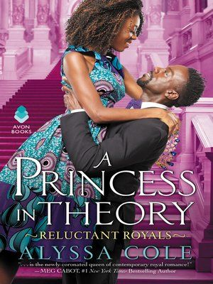
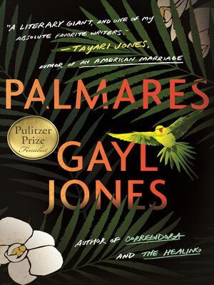

Houston Public Library ebooks available for immediate checkout as of Nov 22, 2026, sorted by OverDrive global popularity (most popular first). Top 100. Fantasy is tagged in purple. Tap a title to open it in the library catalog.

